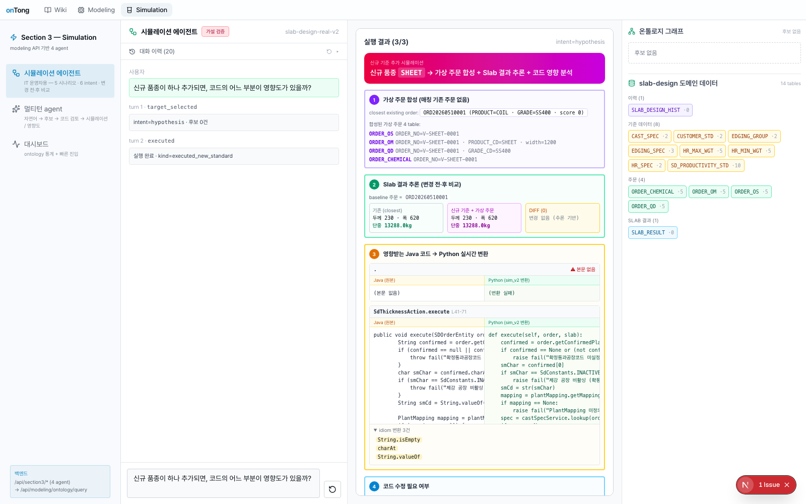
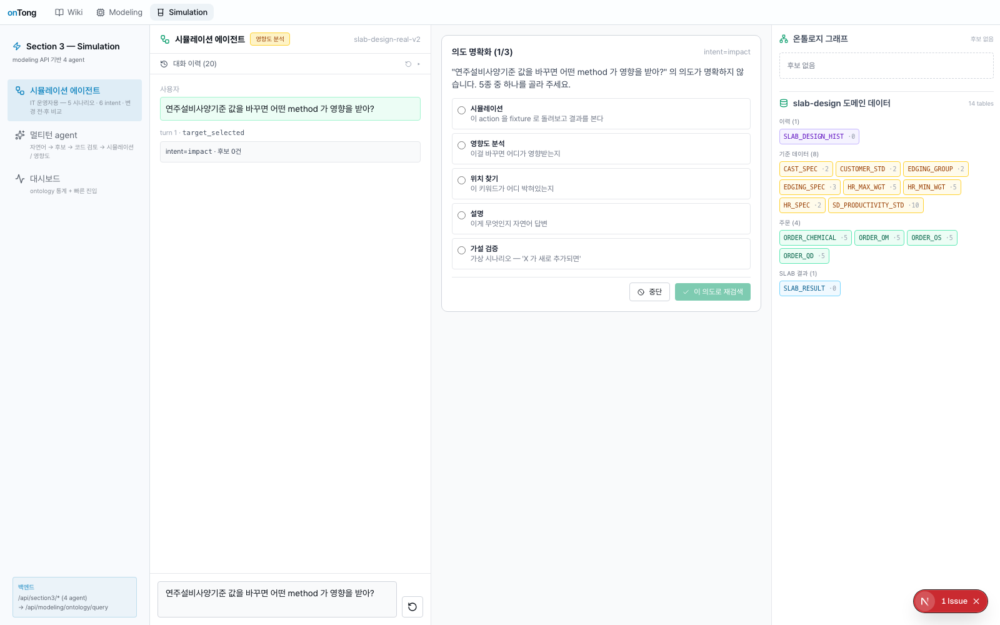

위키는 우리 회사 모든 사람의 큰 도서관이에요. 문서(책)를 만들고·고치고·옮길 때 실수가 생기지 않도록 똑똑한
사서(Agent)들이 지켜줘요. 인용 관계 자동 추적 · 동시 편집 보호 · AI 답변 · 지식 그래프까지 — 살아있는 지식
체계를 만들어갑니다.
🤝
인용 자동 추적🚫
안전 삭제 G7👯
동시 편집 OCC📸
자동 스냅샷🤖
onTalk RAG🕸️
지식 그래프🛡️
ACL 권한 동기화
🗂️위키 개요 & 인용 관리Story
1~3▲
📚 위키가 뭐예요?
위키 = 도서관, 문서(.md) = 책, 폴더 = 책장.
수많은 직원이 동시에 책을 만들고·고치고·옮겨요. 어떤 책은 다른 책을 인용(각주)하고, 사서들이 모든 인용을 카드에 적어놓고 관리해요.
SCM/인사/재무 등 부서별 책장 → .md 파일 + RefIndex 인용 카드
🤝 책끼리 손잡기 — RefIndex
본문에 [[발주-검수-기준]]
또는 [text](path.md)
형태로 인용하면, ReferenceExtractor가 저장 즉시 RefIndex(SQLite/Postgres)에 인용
카드를 등록해요. frontmatter의 related/superseded_by/supersedes 항목도 모두 추적.
ReferenceExtractor → RefIndex 카드 자동 등록 (Phase 1 핵심)
🔍 깨진
다리 찾기 — Broken Refs 감지
책 A가 책 B를 인용 중인데 누군가 B를 삭제했다면? 인용은 깨진 다리가 돼요. 사서는 카드를 점검해서 깨진 인용을
빨갛게 표시하고, broken-refs 페이지에서 한눈에 확인할 수 있어요. DB SQL anti-join으로 빠르게
조회해요.
GET /api/wiki/broken-refs → SQL anti-join (index 기반)
⚙️
적용 기술
ReferenceExtractor
wikilink·md-link·frontmatter 3가지 인용 형태 파싱
RefIndex
SQLite/Postgres 인용 카드 등록·조회 DB
SQL anti-join
broken-refs 인덱스 기반 빠른 탐지
Phase 1
전체 위키 참조 무결성의 기반
🎬 데모
영상
위키 개요 & 인용 관리 데모
YouTube 링크를 추가하면 영상이 표시됩니다
youtube.com/embed/VIDEO_ID
🛡️안전 삭제 & 동시 편집 보호Story
4~6▲
🚫 인용 중이면 못 버려요 — G7 Delete
다른 책이 인용 중인 책을 삭제하려 하면 사서가 차단해요: "이 책은 N개 책이 인용 중이에요. 먼저 그 책들의 인용을 정리한 다음에
오세요."force=true로도 우회 불가하여 참조 무결성을 완벽 보장.
DELETE → RefIndex.inbound() 검사 → 409 Conflict (policy=G7)
👯 같이 써도 안 섞이게 — OCC
동해가 먼저 저장하면 책은 v2. 김철수가 v1 기억으로 저장 시도하면 OCC(낙관적 동시성 제어)가 차단: "그 사이
누가 바꿨어요. 비교해서 합쳐야 해요." 한 사람의 변경이 조용히 사라지는 일을 원천 방지.
If-Match: <ULID 버전> → version_store 비교 → 409 + server_content
🧩 충돌 해결 매뉴얼 — 3-way merge
충돌이 났을 때 동해는 1·2번 줄, 김철수는 3·4번 줄을 고쳤다면 둘 다 살릴 수 있어요. 충돌 해결 모달에서
블록별로 "내 변경" vs "서버 변경"을 한 줄씩 선택해 최종본을 만들어요. 각 블록에 고유 ID가 있어 한 블록 선택 시 다른 블록 위치가 흔들리지
않아요.
diff3 알고리즘 + 블록 고유 ID(b1, b2, ...) → 선택적 merge (Phase 5-D2)
⚙️
적용 기술
G7 Policy
RefIndex.inbound() 검사 409 Conflict (force도 차단)
OCC
If-Match ULID 헤더 + version_store 비교
diff3 알고리즘
블록 고유 ID 기반 3-way merge
Phase 2/5-D2
동시성 제어 핵심 구현
🎬 데모
영상
안전 삭제 & 동시 편집 보호 데모
YouTube 링크를 추가하면 영상이 표시됩니다
youtube.com/embed/VIDEO_ID
📸자동 스냅샷 & 똑똑한 이름 변경Story
7~9▲
📸 자동으로 찰칵 — 저장 직전 스냅샷
책을 고치기 전 페이지 사진을 자동으로 찍어 보관해요. 나중에 "어? 옛날 게 더 좋았네" 싶으면 사진을 보고 그 시점으로 되돌릴 수 있어요.
최근 20개까지 자동 보관, 삭제 직전도 찰칵!
SnapshotStore BLOB 보관 (N=20) → POST /api/wiki/snapshots/restore
✏️ 책 이름 바꾸기 — 수술적 자동 갱신
v2 → v3 이름 변경은 단순 텍스트 치환이 아니에요. 코드 블록 안, 다른 단어의 일부일 수도 있으니 RefIndex의 정확한
offset·length를 기준으로 수술하듯 교체. 오른쪽→왼쪽 순서로 처리해 앞쪽 offset이 흔들리지 않아요.
예전엔 "N개 책에 영향이 있어요"만 알려줬어요. 이제는 그 책들 중 어디 어떻게 바뀔지 한 줄씩
빨강(이전)→초록(이후)으로 미리 보여줘요. 확인 후 결정할 수 있어 실수를 방지해요. ref 위치 ±200자를 line 경계로
hunk 생성.
GET /rename-preview?with_diff=true → compute_preview_hunks dry-run (E6)
⚙️
적용 기술
SnapshotStore
BLOB 보관 N=20 save/pre_delete reason
RenameOrchestrator
offset·length 기반 수술적 패치
preview_hunks
dry-run + ±200자 line 경계 hunk 생성
Phase 2/3/E6
스냅샷·rename· 미리보기 통합
🎬 데모
영상
스냅샷 & 이름 변경 데모
YouTube 링크를 추가하면 영상이 표시됩니다
youtube.com/embed/VIDEO_ID
📦폴더 이동 & 편집 잠금 & Undo
& 권한(ACL)Story
10~13▲
📦 책장 통째로 옮기기
폴더 이름 변경 → 안의 모든 파일 자동 이동 + 인용 카드 일괄 갱신. Shift+클릭으로 여러 파일 선택해 다른 폴더로 드래그&드롭 가능.
per-user bulk lock으로 동시 중복 이동 방지.
50개씩 chunk 처리 + BulkMoveDialog → PATCH × N (Phase 4)
🔒 편집 중이면 비켜요 — Edit lock
김철수가 편집 중인 문서를 동해가 이름 변경하면 저장 시 충돌 발생. 사서가 차단: "이 문서는 현재 김철수가 편집 중이에요. 끝난 후 다시
시도하세요." 본인이 잠근 경우엔 통과.
lock_service.status(path) → 타인 잠금 시 차단 (Phase 5-C)
⏪ 5분 안에 되돌리기 — Undo Toast
이름 변경 직후 화면 아래 토스트 알림과 5분 카운트다운이 떠요. 시간 안에 "되돌리기" 클릭 → 파일시스템 + 본문
인용 + DB 모두 원상 복구. 5분이 지나면 timestamp 검사로 자동 거부.
audit_id → POST /undo → reverse plan 생성 (Phase 5-C)
🛡️ 비밀 자동 따라가기 — ACL 동기화
공개 폴더의 문서가 비밀 폴더로 이동 시, 예전엔 이동 직후 잠깐 일반 직원도 검색 가능(위험!). E4 개선으로 이동
즉시 검색 인덱스 권한도 동기화 → leak window ~0ms.
chunk_meta_update → storage.move 직후 + access_scope 즉시 갱신
⚙️
적용 기술
BulkMoveDialog
50개씩 chunk 순차 PATCH 처리
Redis Lock
per-user bulk lock 동시 중복 방지
audit_id + reverse plan
5분 이내 Undo 파일·DB 원상 복구
E4 fix
chunk_meta_update 즉시 ACL leak ~0ms
🎬 데모
영상
폴더 이동 & 잠금 & Undo 데모
YouTube 링크를 추가하면 영상이 표시됩니다
youtube.com/embed/VIDEO_ID
🤖AI 비서 — onTalkStory 14▲
🤖 AI 비서
(onTalk) — 위키에 직접 물어보기
도서관 한쪽의 친절한 사서 봇. "주문 처리 규칙 알려줘" 라고 말하면 관련 책들을 찾아 읽고 요약 + 근거
인용으로 답해줘요. 단순 키워드 검색이 아니라 의미(semantic)를 이해하며, SSE 스트림으로 실시간으로 답변이 쌓여요.
①
query_augment
질문 풍부하게 재작성
②
wiki_search
BM25+Vector 하이브리드
③
llm_generate
검색 결과로 답변 생성
④
citation_tracker
chunk 인용 근거 첨부
⚙️
적용 기술
pydantic-ai
RAGAgent ReAct 패턴
ChromaDB
BM25+Vector 하이브리드 검색
LLM (Claude/GPT)
자연어 답변 생성
SSE Stream
서버-전송 이벤트 실시간 스트리밍
🎬 데모
영상
AI 비서 onTalk 데모
YouTube 링크를 추가하면 영상이 표시됩니다
youtube.com/embed/VIDEO_ID
🧪AI 충돌 감지 & 이미지 OCRStory 15~16▲
🧪 충돌
자동 감지 + AI 해결
문서 A는 "주문 24시간", 문서 B는 "48시간" — 모순! ConflictDetectionService가
ChromaDB metadata로 유사 문서 페어를 찾고, AI가 두 문서를 읽어 verdict(모순/중복/보완) + confidence + 해결책까지
제안해요.
ConflictAnalysis(pydantic-ai) → conflict_store 저장 → UI ⚠️ 배너
🖼️ 이미지
자동 OCR
이미지 첨부 시 사서가 자동으로 글로 옮겨 적어요. 에러 화면 캡처 → OCR 텍스트 추출, 다이어그램 → Vision LLM 설명. 그 글이 문서의
일부처럼 검색되고 AI 비서가 사진 내용도 인용해요.
문서마다 frontmatter: 도메인, 프로세스, 태그, 작성자, 갱신일자. "SCM 도메인 + 검수 프로세스 + #high"
조건으로 즉시 필터링. tag_registry가 신규 태그를 자동 학습·표준화해요.
MetadataIndex → ChromaDB where clause 필터 + RAG 프리필터
⚙️
적용 기술
ConfidenceService
점수·chunk 길이 ·일관성 결합
CitationTracker
chunk_id SSE 스트리밍 첨부
FeedbackTracker
👍/👎 → 검색 ranking 반영
MetadataIndex
json_file(dev) / redis_hash(team)
🎬 데모
영상
신뢰도 & 태그 검색 데모
YouTube 링크를 추가하면 영상이 표시됩니다
youtube.com/embed/VIDEO_ID
🛠️Skill 시스템 & AI 작성 & 지식
그래프Story 19~21▲
🛠️
Skill 시스템
_skills/ 폴더에 마크다운을 넣으면 챗봇이 즉시 그 규칙을 준수해요. "보안 점검 도와줄 때 OO 양식으로 답해" 라고 가르치는 파일 하나로
코드 변경 없이 누구나 새 능력을 AI에 추가.
SkillLoader → SkillMatcher(키워드/임베딩) → system message 주입
✍️ AI
작성 도우미
"캐시 장애 대응 매뉴얼 만들어줘" → ① 도메인 추론 ② 기존 문서 참고 ③ frontmatter 자동 채우기 ④ 섹션 구조 생성 ⑤
초안 작성 → 사용자 승인 후에만 저장.
wiki_write skill → preview only → POST /api/wiki/file (승인 후)
🕸️ 지식
그래프 + 페르소나 (ACL)
모든 문서의 인용 관계를 별자리처럼 시각화해요. 인사팀·SCM팀·임원 사용자마다 볼 수 있는 노드가 자동으로 필터돼요.
누가 어느 문서를 인용하는지 한 화면에서 파악 가능.
GraphBuilder(RefIndex) + dagre + react-flow + get_user_scope(ACL) 자동 주입
⚙️
적용 기술
SkillLoader
_skills/**/*.md frontmatter 파싱
SkillMatcher
키워드/임베딩 점수 → system msg 주입
wiki_write
Pydantic 검증 preview-only 워크플로
GraphBuilder
dagre + react-flow RefIndex 시각화
🎬 데모
영상
Skill & AI 작성 & 지식 그래프 데모
YouTube 링크를 추가하면 영상이 표시됩니다
youtube.com/embed/VIDEO_ID
🏁종합 시나리오 — 모두 합쳐 보기Story 22▲
"결제 장애 보고 + 공정 기준 v2→v3 업데이트" — 실제 업무에서 모든 기능이 함께 동작하는 End-to-End 흐름
①이미지 업로드 → OCR 자동 추출 → chunk
포함
②AI 작성: 장애 보고 frontmatter + 초안
생성
③동시 편집 → OCC → 409 충돌
발생
④3-way merge로 두 변경 모두 살리고
저장
⑤Snapshot 자동 보관 (v2.0, v2.1,
v2.2)
⑥AI 충돌 감지 → 기존 매뉴얼과 모순 해결안
제시
⑦Rename Preview → v2→v3 인용
hunks 미리보기
⑧Edit lock → 편집 완료 후 이름 변경
허용
⑨Undo Toast 5분 카운트다운 → v3
확정
⑩RAG 질문 → 새 보고 + OCR + 매뉴얼 인용
답변
⑪신뢰도 92% + 3개 chunk 출처 + 👍
피드백
⑫ACL 그래프 + G7: 임원만 v3 확인, 삭제
시도 차단
🎬 종합
데모 영상
종합 시나리오 데모
YouTube 링크를 추가하면 영상이 표시됩니다
youtube.com/embed/VIDEO_ID
Modeling Agent
란?
비즈니스 용어 → 설계서 → 소스 코드까지 완전한 End-to-End Traceability를 구축합니다. 온톨로지 기반 지식 구조화로
IT 운영의 의미론적 연결을 실현합니다.
🔗
온톨로지📐
E2E Traceability🤖
AI 관계 추천📊
Graph DB🔄
버전 관리
🔗온톨로지 에디터 & E2E
TraceabilityFeature 1~3▲
🎨 드래그&드롭 비주얼 에디터
직관적인 드래그&드롭 방식으로 비즈니스 개념과 관계를 그래프로 시각화하여 편집. IT 지식 없이도 누구나 온톨로지 모델을 구성할 수 있어요.
React Flow 기반 인터랙티브 그래프 UI
📐 3-Layer E2E 연결 구축
Business Term → Design Doc → Source Code 3단계를 온톨로지로 연결. 비즈니스 요구사항이
실제 소스 코드 어디에 구현됐는지 추적 가능.
OWL / SPARQL 의미론적 표준 포맷
🔀 관계 유형 정의 (IS-A · HAS-A · USES · 영향도)
개념 간 의미론적 관계를 표준 온톨로지 패턴으로 정의하여 구조화된 지식 체계를 구성. IS-A(상속), HAS-A(포함), USES(사용), 영향도
관계를 명시적으로 표현.
Neo4j Graph DB 기반 관계 데이터 저장·쿼리
⚙️
적용 기술
Graph DB
Neo4j 관계 데이터 저장·쿼리
Ontology
OWL / SPARQL 의미론적 표준 포맷
Visualization
React Flow 인터랙티브 그래프 UI
E2E Layer
3-Layer Trace Term→Doc→Code
Traceability
흐름
Business Term
→
Design Doc
→
Source Code
→
Actionable Knowledge
🎬 데모
영상
온톨로지 에디터 & E2E Traceability 데모
YouTube 링크를 추가하면 영상이 표시됩니다
youtube.com/embed/VIDEO_ID
🤖AI 추천 & 모델 관리Feature 4~6▲
🤖 AI 기반 관계 자동 추천
신규 개념 등록 시 기존 온톨로지 패턴을 분석하여 관련 노드·관계를 자동으로 제안. 수동 연결 작업을 대폭 줄여줘요.
LLM 추천 엔진 기반 관계 자동 탐지·제안
📜 모델 버전 관리 & 이력 추적
온톨로지 모델의 모든 변경 이력을 버전으로 관리. 이전 버전 복원 및 비교 지원. 누가 언제 어떤 관계를 추가·변경했는지 추적 가능.
Git-like 버전 관리 + 변경 이력 DB 저장
📤 온톨로지 모델 Export (OWL / JSON-LD)
작성된 모델을 국제 표준 포맷(OWL, JSON-LD)으로 내보내 타 시스템과 공유 및 연동 가능. 팀 간 지식 자산의 이식성을 보장.
OWL / JSON-LD 표준 Export + 팀 공유
⚙️
적용 기술
AI Recommend
LLM 추천 엔진 관계 자동 탐지
Version Control
변경 이력 DB 버전 비교·복원
Export
OWL / JSON-LD 표준 포맷 Export
Collaboration
팀 공유·연동 다중 사용자 편집
🖥️ 화면 미리보기
🖼️
modeling-01.png · modeling-01.gif
파일을 추가하면 자동으로 표시됩니다
🖼️
modeling-02.png · modeling-02.gif
파일을 추가하면 자동으로 표시됩니다
🎬 데모
영상
AI 추천 & 모델 관리 데모
YouTube 링크를 추가하면 영상이 표시됩니다
youtube.com/embed/VIDEO_ID
Simulation
Agent 란?
IT 담당자 개입 없이 현업이 직접 영향도 분석·시뮬레이션을 수행합니다. 데이터·정책 변경 시 파급 효과를 사전에 검증하는 운영 프로세스
자동화의 핵심입니다.
📊
영향도 분석🎯
현업 직접 수행⚗️
시나리오 비교🤖
자연어 해석📄
자동 보고서
📊영향도 분석 & 시뮬레이션Feature
1~3▲
🔗 연쇄 영향 범위 자동 계산
Modeling에서 정의된 영향도 관계를 기반으로 변경 시 영향받는 모든 노드를 연쇄적으로 자동 추적. 예상치 못한 2차·3차 영향까지 사전 파악
가능.
SPARQL / Cypher 온톨로지 관계 탐색
⚗️ 파급 효과 시뮬레이션
데이터 변경·정책 변경 시나리오를 사전에 가상 실행하여 실제 적용 전 파급 효과를 예측. "실행 전 검증"으로 운영 리스크를 사전에 제거.
Python / Pandas 데이터 시뮬레이션 엔진
📋 복수 시나리오 비교 분석
여러 변경 시나리오를 동시에 설정하고 결과를 나란히 비교하여 최적 의사결정을 지원. 파라미터를 바꿔가며 "what-if" 분석을 반복 수행 가능.
시나리오 파라미터 엔진 + 멀티 시나리오 비교
⚙️
적용 기술
Intent 분류
OpenAI Multiturn 6 intent + 정규식 보정
Ontology Grounding
business_terms 83건 label/aliases LIKE 매칭
Java→Python
sim_v2 translator tree-sitter + idiom
Slab 추론
Java :8080 baseline + propagation rule 14↑
Progressive UI
4-stage 단계 확인 row → 값 → 주문 → 결과
SSE 스트리밍
hypothesis 4-step EventSource 400ms
Graph Viewer
SVG 노드/엣지 wheel zoom · drag pan
코드 영향 판정
enum/seed heuristic high/medium/info 분류
🎬 데모
영상
영향도 분석 & 시뮬레이션 데모
YouTube 링크를 추가하면 영상이 표시됩니다
youtube.com/embed/VIDEO_ID
🎯현업 자율화 & 자동 보고서Feature
4~6▲
👤 현업 담당자 직접 실행
IT 지식 없이도 현업이 파라미터만 설정하면 시뮬레이션을 직접 실행. IT 의존도 제로로 운영 자율성을 극대화.
직관적 UI + 가이드 기반 파라미터 입력
💬 결과 자연어 해석
"이 변경은 A·B·C 프로세스에 영향을 줍니다" — 복잡한 분석 결과를 이해하기 쉬운 자연어로 자동 해석. 기술적 배경 없이도 결과를
즉시 이해.
LLM (Claude / GPT) 결과 자연어 설명
📄 결과 보고서 자동 생성
시뮬레이션 결과를 PDF·Excel로 자동 생성. 별도 정리 작업 없이 즉시 공유·보고 가능. 표준 보고서 템플릿으로
문서 품질 일관성 보장.
자동 생성 엔진 + PDF / Excel Export
⚙️
적용 기술
LLM 해석
Claude / GPT 결과 자연어 설명
보고서 엔진
자동 생성 PDF / Excel
No-Code UI
현업 직접 실행 파라미터 설정
Template
표준 보고서 품질 일관성
🖥️ 화면 미리보기

🖼️
simulation-01.png
신규 품종 추가 시 영향 분석
Q. "신규 품종이 하나 추가되면, 코드의 어느 부분이 영향이 있을까?"
→ 가상 주문 4 table 합성 · 신규 기준 적용 Slab 결과 추론 ·
영향받는 Java 메서드 Python 실시간 변환 · 코드 수정 필요 여부 (SdConstants enum / CAST_SPEC INSERT)

🖼️
simulation-02.png
기준 데이터 변경 시 영향 method
Q. "연주설비사양기준 값을 바꾸면 어떤 method 가 영향을 받아?"
→ ontology 자동 매핑 CAST_SPEC.SLAB_THICKNESS 감지 ·
4-stage (기준 row 선택 → 변경 전·후 입력 → 매칭 주문 → Slab 비교) ·
thickness 변경이 단중 14개 필드로 propagate (×1.0435)
🎬 데모
영상
현업 자율화 & 자동 보고서 데모
YouTube 링크를 추가하면 영상이 표시됩니다
youtube.com/embed/VIDEO_ID
독창성 (Creativity)
🔍
'Code-Free' 자연어 기반 블랙박스 로직 시각화
AS-IS포스코 마케팅 업무 기준이 소스 코드에 얽혀
현업은 IT에 매번 문의를 해야하는 번거로움 발생
TO-BE"A 주문 Slab설계 로직
보여줘" → 소스코드·데이터 관계를 즉시 시각화, 코드 없이 암묵지 파악
⚗️
포스코 마케팅 업무 가상
시나리오 기반 '지능형 What-If 시뮬레이션'
AS-IS정책 변경 시 타 부서·데이터의 연쇄
영향(Side-Effect) 예측 불가
TO-BE가상 시나리오 입력 → 온톨로지 기반으로
주문 또는 재료의 설계 결과 변동 사항 등 실시간 Simulation 통한 검증 가능
📚
포스코 마케팅 업무 도메인
지식 ↔ 'Live Wiki' 지식 정보 자동 최신화
AS-IS정책 · 기준 · 로직 변경 후에도 매뉴얼은
구식, 암묵지 의존
TO-BE형태 제한 없는 지식 등록과 AI의 연관도
자동 관리로, 자연어 검색과 유사 문서 탐색이 실시간 연동되는 Live Wiki
기대효과 (Business Impact)
📊정량적 효과
즉시
자연어 기반 블랙박스 로직 확인
확인 불가→자연어 역추적
🔍 Why-Tracking 탐색 엔진
↓ 75%
정책·기준 변경 영향도 검토 시간
평균 3일→반나절 이내
⚗️ What-If 가상 시나리오 검증
↓ 55%
업무 지식 검색 소요 시간
평균 30분→13분 이내
📚 AI 연관도 자동 관리 Wiki
↓ 50%
IT 로직 문의 건수
매번 IT 문의→자연어 직접 탐색
🔍 Code-Free 블랙박스 로직 시각화
💬정성적 효과
⚡
포스코 마케팅 업무 담당자의 의사결정 신속성 및 자율성 극대화 (Agility & Autonomy)
IT 대기 없이 자연어로 실시간 원인 분석·가상 시뮬레이션 수행 → 시황 변화에 맞춘 정책 수립 및 의사결정 속도 획기적 가속화(Zero-Delay)
🛡️
기준 변경 리스크 최소화 및 가상 검증의 안전성 확보 (Safety & Reliability)
Rule of Thumb 방식에서 데이터 기반 정밀 시뮬레이션으로 전환 → 실제 반영 전 연쇄 부작용·데이터 왜곡 선제 검증, 비즈니스 리스크 원천 차단
📚
지속 가능한 포스코 마케팅 도메인 지식 자산화 및 휴먼 리스크 해소 (Sustainability & Continuity)
탐색·검증 과정과 베테랑 노하우가 Live Wiki에 자동 누적 → 암묵지의 형식지 전환으로 인사이동·신임 담당자 전입 시에도 Knowledge Gap 없는 완벽한 업무 연속성 보장
확장성 (Scalability)
🎯 포스코 마케팅본부 박판수주공정 업무의 핵심인 '박판공정계획 내 Slab 설계' 업무를 대상으로 개발 및 기능 검증 완료
🧩 특정 도메인에 종속된 일회성 시스템이 아닌, "지식과 자원이 연결되면 어디든 적용 가능하다"는 온(On)통(通) Platform의 핵심 철학을 아키텍처로 구현
🔌 본 Platform이 보유한 3대 핵심 Agent 기능은 독립된 범용 엔진으로 설계되어, 데이터와 자원 연동만으로 시스템 재개발 없이 즉시 이식(Plug & Play) 가능하도록 설계
🗺️ 온통 Platform 단계별 확산 시나리오
현재 · '26년 해커톤 과제
📍 포스코 마케팅 일부 업무 구현
포스코 마케팅본부 박판수주공정 업무의 핵심인 '박판공정계획 내 Slab 설계' 대상으로 구현
1단계 · SCM Domain Expansion
🔗 포스코 마케팅 업무 전체 확산
영업, 판매, 주문, 품질, 공정, 진행, 출하, 물류 등 포스코 마케팅 전체 프로세스로 확대 적용
2단계 · MES Domain Expansion
⚙️ 포스코 MES 업무 확산
마케팅 기준 변경이 제철소 현장 조업 데이터에 미치는 영향까지 통합 추적·시뮬레이션, Value Chain 연결
3단계 · Enterprise-Wide Roll-Out
🏢 포스코 전사 확산
인사·재무·구매 등 전사 비즈니스 적용하여 코드없이 자연어로 탐색·분석하고 지식을 관리하는 전사 표준형 비즈니스 Platform 완성 실현
접속 방법
서비스 URL
🔗[서비스 URL을 여기에 입력하세요]
환경 요구사항
권장 브라우저: Chrome · Edge 최신 버전
화면 해상도: 1280px 이상 권장
네트워크: 인터넷 연결 필요
테스트 계정
ID
[테스트 ID]
PW
[테스트 PW]
권한
Admin / User
체험 방법
📚 Wiki Agent
1
Wiki 메뉴 접속
상단 메뉴에서 'Wiki' 탭 클릭
2
문서 업로드 또는 검색
드래그&드롭 업로드 또는 키워드 검색 입력
3
AI 분석 결과 확인
온톨로지 기반 분석 결과와 연관 개념 맵 확인
🔗 Modeling Agent
1
Modeling 에디터 진입
'Modeling' 탭에서 비주얼 에디터 실행
2
노드 추가 & 관계 연결
노드 추가 후 드래그로 개념 간 관계 연결
3
모델 저장 및 공유
완성된 온톨로지 모델 저장 후 팀 공유
⚗️ Simulation Agent
1
시나리오 파라미터 설정
'Simulation' 탭에서 조건 및 파라미터 설정
2
시뮬레이션 실행
'실행' 클릭 → 온톨로지 모델 기반 분석 시작
3
결과 분석 & 보고서
시각화 결과 확인 후 보고서 자동 생성·다운로드
💡 Tip — Simulation 테스트 시 미리 준비된 샘플 시나리오 데이터를 불러오면 빠르게 기능을 체험할 수 있습니다.
팀 소개 & 팀원
온(On)통(通)
온(On) = Ontology · 지식의 구조와 관계를 정의
통(通) = 통할 통 · 연결되고 통한다 "Ontology로 통하자" — 온톨로지 기반 AI로 지식이 흐르는 세상
🧑💻
신동해 프로 팀장
Wiki · Modeling 개발 총괄
👩💻
배지윤 프로
Simulation 개발 총괄
👩💼
박혜진 프로
비즈니스 기획 및 설계 총괄
과제 소개
과제
명
온(On)통(通)
Platform|포스코 마케팅 고객을 위한 복잡한 소스코드 없이 자연어로 마케팅 업무 로직과 데이타를 탐색하고, Wiki
및 Simulation 기반의 로직·기준 변경 영향도를 직접 검증하는 현업 주도형 자율
Platform
과제
선택 이유
🔍 포스코 마케팅 업무 지식의 블랙박스화 (Black-Box)
주문의 공장결정 기준, 재료 설계 로직
등이 소스코드·DB 내부에 숨겨져, 현업이 결과의 원인을 직접 상세히 확인 불가 → 자연어로 소스코드부터 데이터까지 인과관계를 역추적하는 탐색 엔진 필요
⚠️ 정책 · 기준 · 로직 · 변경의 잠재적 리스크 (High-Risk)
정책 · 기준 · 로직 변경 시 연계
시스템의 연쇄 부작용 예측 불가 → 현업이
직접 시나리오를 입력해 영향도를 안전하게 선제 검증하는 가상 시뮬레이션 환경 필요
💬 극심한 커뮤니케이션 장벽 (Communication Barrier)
현업·IT 언어 불일치로 단순 문의에도
막대한 소통 비용 발생, 답변은 휘발성 암묵지로 반복 문의 유발 → 어떤 형태의 지식이든 AI가
자동 분류·연결하는 지능형 Live Wiki로 Zero-Delay 셀프서비스 실현
주요
기능
📚
Wiki Agent
온톨로지 기반 지식 검색 ·
관계 시각화 · 자연어 Q&A
🔧
Modeling Agent
시스템 구조 자동 모델링 ·
용어 정의 · 영향도 분석
🎯
Simulation Agent
변경 시나리오 시뮬레이션 ·
리스크 예측 · 의사결정 지원
소개
영상
온통 Agent 소개 영상
YouTube 링크를 추가하면 영상이 표시됩니다
youtube.com/embed/VIDEO_ID
우리가 쏟아부은 시간들
☀️
주말 반납
8 주말
토·일 평균 10시간 총 80시간 투자
🌙
평일 저녁 반납
60+ 시간
퇴근 후 저녁 3~4시간 6주간 야간 작업
🎮
취미생활 반납
100% 반납
운동·모임·드라마 모두 잠시 안녕 👋
☕
커피 소비
∞ 잔
야근의 동반자 아메리카노 무한 보충
프로젝트 전체 투자 시간 (3인 합산)
주말 + 평일 저녁 + 미팅 + 개인 학습 — 열정을 숫자로 환산하면
420+ hrs
개발 진행 과정 히스토리
🏁 킥오프 미팅 · 오프라인
팀 구성 및 프로젝트 방향 설정. 온톨로지 기반 AI Platform 아이디어 채택. 역할 분담 및 기술 스택 결정.
📋 아키텍처 설계 · 온라인 미팅
시스템 아키텍처 설계 및 온톨로지 모델 정의. Wiki / Modeling / Simulation 기능 스펙 확정.
⚙️ 1차 개발 스프린트 · 개인 작업
백엔드 API / 프론트엔드 컴포넌트 / AI 모델 학습 병행 진행. 각자 독립 개발 후 PR로 통합.
🔄 통합 테스트 · 오프라인 미팅
개발된 기능 통합 및 전체 플로우 테스트. 버그 수정 및 UX 개선 작업.
🚀 2차 개발 스프린트 · 개인 작업
피드백 반영 및 기능 고도화. 성능 최적화 및 UI 폴리싱.
🎯 최종 준비 · 오프라인 미팅
데모 시나리오 완성 및 발표 자료 준비. 최종 점검 및 제출.
🏆 결과 제출
시연 영상, 결과 보고서 Page 제출!
🎢 우당탕탕 우여곡절 스토리
Episode 01
🔥 "온톨로지가 뭐야?"
팀 이름부터 온톨로지를 내세웠지만, 막상 시작하니 팀원 모두가 온톨로지를 실제 구현해 본 경험이 없었습니다. 첫 주는 논문과 사례 연구를 밤새
읽으며 "우리가 만들 수 있을까?" 고민했던 시간이었습니다. 결국 우리만의 방식으로 해석하고 구현하기로 결정!
Episode 02
💥 "API 연결이 왜 안 되지?"
프론트엔드와 백엔드를 통합하던 날, CORS 오류와 사투를 벌였습니다. 밤 11시에 화상통화로 모여 3시간 동안 디버깅… 원인은 단 한 줄의
설정 오류였습니다. 이후로 "CORS는 우리의 숙적"이 팀 내 밈이 되었습니다 😅
Episode 03
🌪️ "Simulation, 방향 대전환!"
처음 구상했던 Simulation 기능과 실제 구현 사이의 갭을 발표 3일 전에 발견했습니다. 과감하게 방향을 바꾸고 밤을 새워 새로운 방식으로
구현했습니다. 결과적으로 원래 계획보다 훨씬 좋은 결과물이 나왔습니다!
Episode 04
🎉 "우리가 만들었다!"
수많은 밤샘과 예상치 못한 버그들을 헤쳐나가며 드디어 온(On)통(通) Platform이 완성되었습니다. 팀원들과 함께 처음으로 전체 기능이 동작하는
화면을 보던 순간, 말 없이 채팅창에 이모티콘만 올라왔습니다. 그것으로 충분했습니다 🥹
💬 팀 온(On)통(通)의 한마디 — "온톨로지로 '통'하자는 팀명처럼, 우리 팀원들도 서로 잘 '통'했습니다. 힘들었지만, 함께해서 즐거웠던
프로젝트였습니다. 감사합니다! 🙏"